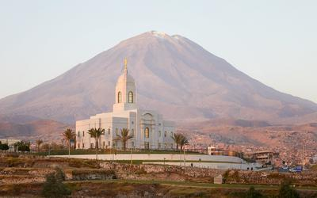

Click here to make your reservation now.
 We are pleased to have you in this place where you can learn more about temples, ordinances, family history and more. We provide hotels that can be used for people that go to the temple that are close by so they can enjoy the experience to serve without running and rushing to get to the temple of The Church of Jesus Christ of Latter-day Saints. We alos have free amenities, such as breakfast, indoor pool, WiFi, shuttles, and more...
The Salt Lake Temple is a structure of granite and it was built over a period of 40 years. It was dedicated on April 6, 1893. In the conference held on April, 2019, President Nelson announced that the Salt Lake Temple would be close on December 29, 2019 for apporximately four years, so they can do some renovation and restoration to the temple. Temples are the most sacred place for members of the Church of Jesus Christ of Latter-day Saints. It is a place where we make covenants with God and have the opportunity to do the ordinances for ourselves and for people that is already in the other side of hte veil. We belive that families can be together forever through sealings, a very special and sacred ordinance that can only be performed in the temple. If you want to learn more about temples and ordincances visit this website